Aprenda as principais tags do HTML de forma simples, rápida e intuitiva.
Este guia foi criado 100% em HTML para que você possa ver o poder que o HTML tem por si só
O que é o HTML
O HTML (HyperText Markup Language, ou Linguagem de Marcação de Hipertexto) é a espinha dorsal de virtualmente qualquer página na World Wide Web. É a linguagem fundamental usada para estruturar e dar significado ao conteúdo que você vê no seu navegador (textos, imagens, botões, formulários, vídeos).
Para compreender exatamente o que o HTML faz, vale a pena desmembrar a própria sigla:
Hipertexto (HyperText): Refere-se a texto que contém links (os "hiperlinks") para outros textos ou recursos. É o conceito que permite navegar de uma página para outra com um simples clique, criando uma rede interconectada de informações em vez de um documento linear/estático.
Linguagem de Marcação (Markup Language): Significa que o HTML não é uma linguagem de programação (ele não possui lógica condicional como if/else, loops como for/while ou operações matemáticas complexas). Em vez disso, ele usa "marcas" (chamadas de tags) para anotar/envolver o texto puro e dizer ao navegador o que aquele texto representa (se é um título, um parágrafo, uma tabela, um campo de entrada, etc.).
A construção do HTML baseia-se em componentes fundamentais: Tags, Elementos e Atributos Tags e Elementos: Um elemento HTML é a unidade individual que compõe a estrutura da página. Na maioria das vezes, ele é composto por:
Tag de abertura: Indica o início do elemento (ex: <p>).
Conteúdo: O texto ou outros elementos contidos nele.
Tag de fechamento: Indica o fim do elemento, marcada por uma barra (ex: </p>).
Exemplo :
<p>Este é o conteúdo do parágrafo.</p>
Resultado:
Este é o conteúdo do parágrafo.
Atributos: Os atributos fornecem informações ou configurações adicionais sobre um elemento. Eles ficam sempre dentro da tag de abertura e geralmente vêm em pares de nome="valor".
target="_blank": Atributo que instrui o navegador a abrir o link em uma nova aba.
Estrutura
A estrutura HTML é o esqueleto de uma página web. O HTML (HyperText Markup Language, ou Linguagem de Marcação de Hipertexto) organiza os elementos que compõem um site — como textos, imagens, botões, links e vídeos — para que o navegador consiga entender e exibir tudo corretamente na tela.
<!DOCTYPE html>
<html lang="pt-BR">
<head>
<meta charset="UTF-8">
<meta name="viewport" content="width=device-width, initial-scale=1.0">
<title>Título da Página</title>
</head>
<body>
<h1>Olá, mundo!</h1>
<p>Este é o meu primeiro parágrafo em HTML.</p>
</body>
</html>
<!DOCTYPE html>: Avisa ao navegador que o arquivo está usando a versão mais recente do HTML (HTML5)
<html lang="pt-BR">: O elemento "pai" que abraça todo o documento. O atributo lang indica o idioma da página. (neste caso português do Brasil)
<head>: Contém informações sobre a página, como título, metadados e links para arquivos externos (CSS, JavaScript).
<meta charset="UTF-8">: Define a codificação de caracteres, garantindo que acentos e símbolos sejam exibidos corretamente.
<meta name="viewport" content="width=device-width, initial-scale=1.0">: Torna a página responsiva, ajustando-a a diferentes tamanhos de tela.
<title>Título da Página</title>: Define o título que aparece na aba do navegador.
<body>: Contém todo o conteúdo visível da página, como textos, imagens e links.
<h1>Olá, mundo!</h1>: Um cabeçalho de nível 1, geralmente usado para títulos principais.
<p>Este é o meu primeiro parágrafo em HTML.</p>: Um parágrafo de texto.
Semântica
HTML Semântico é a prática de usar tags HTML que possuem significado real sobre o tipo de conteúdo que elas envolvem, em vez de usar tags genéricas como (<div> ou <span>) para tudo.
Antigamente, era muito comum estruturar um site usando apenas divs para criar as "caixas" da página: Semântica fraca (genérico):
<div class="header">, <div class="menu">, <div class="artigo">, <div class="rodape">
HTML Semântico (significativo):
<header>, <nav>, <article>, <footer>
Visualmente, para o usuário final, as duas páginas podem ser idênticas se estilizadas com CSS. No entanto, para computadores, robôs de busca e leitores de tela, a diferença é enorme.
Por que ele é tão importante?
Para SEO (Otimização para Motores de Busca) Os robôs de busca (como o Googlebot) usam a estrutura do seu HTML para entender a relevância de cada trecho do site:
Entendimento de hierarquia: Quando o Google encontra um <article> dentro de um <main>, ele entende exatamente onde está o conteúdo de valor da página.
Destaque de cabeçalhos: Usar as tags de título (<h1> até <h6>) na ordem correta indica ao buscador quais temas são mais prioritários no seu texto.
Snippet enriquecido: Ajuda os buscadores a extrair resumos mais precisos para exibir nos resultados de pesquisa.
Acessibilidade: A estrutura semântica facilita a navegação para usuários com deficiência, especialmente aqueles que usam leitores de tela.
Para Acessibilidade (A11y)
Navegação por atalhos: Um usuário de leitor de tela pode saltar direto para o menu (<nav>) ou para o conteúdo principal (<main>) sem precisar ouvir a leitura de todos os elementos anteriores.
Previsibilidade: Elementos semânticos possuem "papéis" (roles) nativos. Por exemplo, uma tag <button> já avisa ao leitor de tela que aquele elemento é clicável e pode ser ativado via teclado, o que não acontece nativamente com uma <div> estilizada.
Manutenção e Leitura do Código
Para desenvolvedores, um código semântico é incomparavelmente mais limpo e fácil de manter. Qualquer pessoa que ler o código entende instantaneamente qual é a função de cada bloco.
História
A história do HTML nasce da necessidade de resolver um problema prático enfrentado por cientistas no final dos anos 1980: como compartilhar informações e pesquisas de forma simples entre computadores diferentes. Em 1989, o físico e cientista da computação britânico Tim Berners-Lee trabalhava no CERN (Organização Europeia para a Pesquisa Nuclear), na Suíça. Na época, milhares de pesquisadores do mundo todo usavam computadores e sistemas operacionais totalmente incompatíveis entre si. Se um cientista quisesse ler a pesquisa de outro, muitas vezes precisava aprender um sistema novo ou formatar os dados manualmente. Para resolver essa confusão, Berners-Lee escreveu a proposta inicial do que chamou de World Wide Web (WWW), unindo o conceito de hipertexto — textos contendo links que permitiam ao leitor saltar de um documento para outro com um simples clique — com a infraestrutura já existente da internet.
Em 1991, Berners-Lee publicou o primeiro documento público especificando o HTML (HyperText Markup Language), contendo apenas 18 tags básicas — das quais 11 permanecem em uso no HTML5 moderno, incluindo a tag de parágrafo <p>, os títulos de <h1> a <h6> e a revolucionária tag <a> para criar hiperlinks. Com o crescimento acelerado da rede, Berners-Lee fundou em 1994 o World Wide Web Consortium (W3C), uma organização com o objetivo de criar padrões universais e evitar que a web se dividisse em tecnologias proprietárias. Em 1995, o HTML 2.0 tornou-se o primeiro padrão oficial padronizado pela IETF. Mais tarde, nos anos 90, o surgimento da competição acirrada entre os navegadores Netscape e Internet Explorer (a chamada "guerra dos navegadores") fez com que as empresas tentassem criar suas próprias tags proprietárias não padronizadas, como a famosa tag <blink> para fazer o texto piscar.
A consolidação da linguagem veio em 1999 com o lançamento do HTML 4.01, que oficializou o suporte a formulários avançados, tabelas e a separação clara entre a estrutura do documento (HTML) e o seu visual (CSS). Após um período de estagnação nos anos 2000, em que a W3C tentou substituir o HTML pelo mais rígido XHTML, uma frente conjunta de desenvolvedores e grandes navegadores formou o WHATWG para criar uma evolução moderna da linguagem. Esse movimento culminou no desenvolvimento do HTML5, padronizado em 2014, trazendo suporte nativo para reprodução de áudio e vídeo, gráficos dinâmicos e tags semânticas avançadas.
Hoje, o sucesso global do HTML deve-se em grande parte à decisão histórica do CERN, que em 1993 liberou o código-fonte e os direitos da tecnologia da World Wide Web totalmente para o domínio público, sem a cobrança de royalties, permitindo que a linguagem se tornasse a espinha dorsal gratuita e acessível da internet que usamos todos os dias.
Como Funciona o HTML
O navegador interpreta o HTML através de um processo estruturado que transforma o arquivo de texto puro em uma representação visual interativa na sua tela. Esse processo faz parte do que os motores de navegação chamam de Caminho de Renderização Crítico (Critical Rendering Path).
Diferente de linguagens de programação como Python ou JavaScript, o HTML não possui lógica, condicionais ou cálculos. Ele é uma linguagem de marcação: ele usa "etiquetas" (chamadas de tags) para sinalizar ao navegador como cada parte do texto, imagem ou elemento deve ser interpretada e exibida.
Quando o navegador baixa o arquivo HTML do servidor, ele segue quatro etapas principais para entender o código:
Conversão de Bytes para Caracteres: O navegador lê os bytes crus que chegam pela rede (ex: 01001000...) e os converte em caracteres de texto com base na codificação da página (geralmente UTF-8).
Tokenização: O texto é analisado para identificar "tokens" — que são os blocos de construção da linguagem, como tags de abertura (<html>), tags de fechamento (</html>), nomes de atributos e conteúdos de texto.
Lexing (Nodos): Os tokens identificados são convertidos em Objetos (Nodos) contendo suas respectivas propriedades e regras.
Construção do DOM: Os Nodos são conectados em uma estrutura de árvore chamada DOM (Document Object Model). O DOM reflete as relações de parentesco do HTML (elementos pais, filhos e irmãos).
Enquanto o navegador lê o HTML e constrói o DOM linha por linha, ele encontra referências a outros arquivos:
Arquivos CSS: O navegador baixa o CSS e constrói outra árvore paralela chamada CSSOM (CSS Object Model), que mapeia todos os estilos e regras visuais que serão aplicados aos elementos.
Arquivos JavaScript: Por padrão, quando a leitura do HTML encontra uma tag <script>, a construção do DOM é pausada. O navegador baixa e executa o código JavaScript antes de continuar lendo o restante do HTML (a menos que sejam usados atributos como async ou defer).
Com o DOM e o CSSOM prontos, o navegador executa as etapas finais para desenhar a página na tela:
Árvore de Renderização (Render Tree): O navegador combina o DOM e o CSSOM em uma única árvore. Ela contém apenas os elementos que serão realmente visíveis na tela (elementos com display: none, por exemplo, são descartados aqui).
Layout (Reflow): O navegador calcula a geometria exata da página — determinando a posição e o tamanho preciso de cada elemento na tela com base no tamanho da janela do usuário.
Pintura (Rasterização/Painting): O navegador converte cada elemento da Render Tree em pixels reais na tela, desenhando textos, cores, bordas, sombras e imagens.
Diferença entre HTML, CSS e JavaScript
A diferença entre HTML, CSS e JavaScript está em suas funções: o HTML cria a estrutura da página, o CSS define o visual e o JavaScript adiciona movimento e ações. Pense em uma casa: o HTML são as paredes e os cômodos, o CSS é a pintura e os móveis, e o JavaScript são as luzes que acendem sozinhas.
O que cada um faz: HTML: Organiza os textos, imagens, links e vídeos em blocos básicos.
CSS: Muda as cores, os tipos de letras, os tamanhos e o lugar de cada coisa na tela.
JavaScript: Faz animações, abre janelas quando você clica em botões e verifica dados que você digita.
Como eles trabalham juntos: O navegador do seu computador lê os três ao mesmo tempo para mostrar o site pronto.
O site só funciona direito e fica bonito se os três amigos ajudarem uns aos outros.
IDEs
As melhores opções de programas para criar e editar arquivos HTML são o Visual Studio Code, o Sublime Text e o Notepad++. Eles ajudam a escrever códigos mais rápido com recursos de cores e preenchimento automático. Principais Editores de HTML:
Visual Studio Code: O programa mais usado no mundo, gratuito, leve e com muitas extensões úteis.
Sublime Text: Um editor muito rápido, leve e simples, ótimo para quem está começando a aprender.
Notepad++: Um bloco de notas avançado e gratuito para computadores com Windows, ideal para edições rápidas de código.
DOM
O DOM (Document Object Model, ou Modelo de Objeto do Documento) é uma interface de programação que representa uma página HTML como uma árvore de objetos.
Quando o navegador carrega um arquivo HTML, ele converte todo aquele texto em uma estrutura viva na memória do computador. É essa estrutura que permite que linguagens de programação, como o JavaScript, consigam ler, alterar, adicionar ou remover elementos da página em tempo real.
A Estrutura em Árvore
O DOM organiza o código em uma hierarquia de nós (nodes), parecida com uma árvore genealógica de pais, filhos e irmãos. Considere este HTML simples:
<!DOCTYPE html>
<html>
<head>
<title>Minha Página</title>
</head>
<body>
<h1>Olá!</h1>
<p>Este é um parágrafo.</p>
</body>
</html>
No DOM, esse código é representado visualmente assim:
Document (A raiz de tudo)
<html> (Elemento pai)
<head> (Filho de <html>)
<title> (Filho de <head>)
"Minha Página" (Nó de texto)
<body> (Filho de <html> e irmão de <head>)
<h1> (Filho de <body>)
"Olá!" (Nó de texto)
<p> (Filho de <body> e irmão de <h1>)
"Este é um parágrafo." (Nó de texto)
O HTML puro é apenas um arquivo de texto estático. Sem o DOM, as páginas da internet seriam como documentos em PDF — imóveis e sem interatividade. Com o DOM, o JavaScript ganha um "controle remoto" para manipular a página sem precisar recarregá-la:
Alterar conteúdo: Mudar um texto na tela quando o usuário clica em um botão.
Modificar estilos: Alterar a cor de um elemento ou esconder um menu ao rolar a página.
Manipular estrutura: Adicionar novas fotos em um feed de redes sociais dinamicamente.
Reagir a eventos: Detectar quando o usuário digita em um campo de formulário, clica com o mouse ou passa o ponteiro sobre uma imagem.
Comentarios
Caracteres Especiais
Emojis
Imagens
audios
videos
links
Tags
Agora chegou o momento em que eu apresento as tags e para o que elas servem
<html>
Pense no HTML como a construção de uma casa. Se o código do seu site fosse essa casa, a tag <html> seria a estrutura inteira — as paredes externas e o telhado que seguram tudo o que existe lá dentro.
Em termos simples, ela é o elemento raiz de um site. Quando o seu navegador (como o Chrome, Edge ou Safari) abre um arquivo, a tag <html> avisa para ele: "Ei, tudo o que estiver aqui dentro é o código que forma essa página da web!".
Dentro dessa "caixa" principal que é o <html>, você sempre vai dividir a casa em dois cômodos fundamentais: <head> e <body> que aprenderemos mais tarde
Além disso, a tag <html> tem uma função super importante para a acessibilidade e para buscas no Google. Você costuma usá-la assim: <html lang="pt-BR">. Esse pequeno detalhe (lang="pt-BR") avisa aos leitores de tela para pessoas com deficiência visual e aos motores de busca qual é o idioma principal da sua página.
Em resumo: nada em uma página web funciona sem a tag <html>, pois é ela quem abraça e organiza todo o resto do seu código!
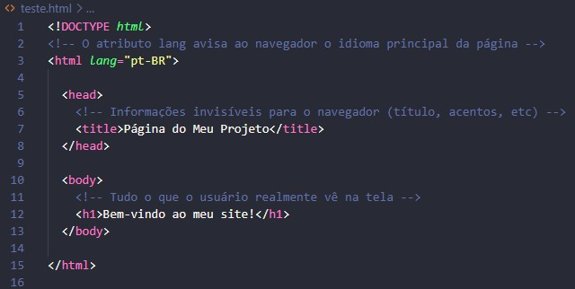
Código html
<base>
Pense na tag <base> como o endereço de retorno impresso no cabeçalho de uma carta ou o cartaz de "Bem-vindo à Loja X" na entrada de um shopping. Se você encontrar um panfleto dentro da loja dizendo para ir até a "Seção de Brinquedos", você já sabe que o caminho começa a partir daquela loja específica, e não da sua casa. A tag <base> diz ao navegador: "Qualquer link relativo que você encontrar nesta página começa a partir daqui".
A tag <base> define o endereço URL padrão (o link base) para todos os links relativos de uma página web. Isso significa que, se você tiver vários links ou imagens que apontam para o mesmo site ou pasta, você só precisa colocar o endereço completo uma vez no cabeçalho (<head>) da página, e os outros links podem usar apenas o caminho curto.
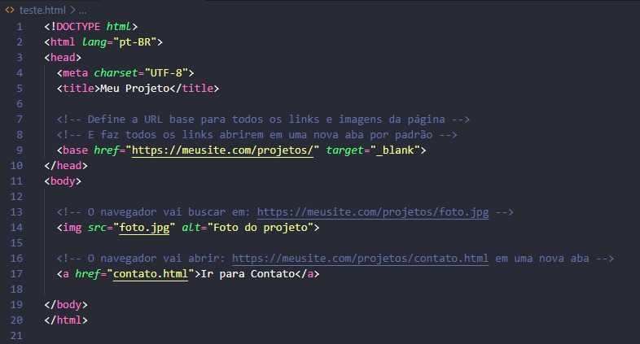
Código base
href: É o atributo mais importante. Ele define a URL base (o endereço absoluto) que será usada como ponto de partida para todos os links e caminhos relativos da página.
target: Define como os links da página devem ser abertos por padrão (por exemplo, _blank para abrir todos os links em uma nova aba do navegador, ou _self para abrir na mesma aba).
<head>
Pense na tag <head> como os bastidores de um teatro ou o painel de controle de um avião. O público (que seria o usuário) não vê os bastidores enquanto assiste à peça, mas é lá que ficam os equipamentos, os roteiros, as instruções de luz e os figurinos organizados para que o show no palco funcione perfeitamente. No site, o <head> guarda as "regras e configurações" que o navegador precisa saber antes de desenhar a página na tela.
A tag <head> é o recipiente que armazena os metadados (dados sobre os dados) de uma página web. Ela fica localizada logo no início do documento HTML, antes do conteúdo visível. É dentro dela que colocamos o título que aparece na aba do navegador, a codificação de caracteres (para aceitar acentos), links para arquivos de estilo (CSS) e informações para os mecanismos de busca (como o Google). Nada do que está dentro do <head> aparece diretamente na área principal da página para o usuário.
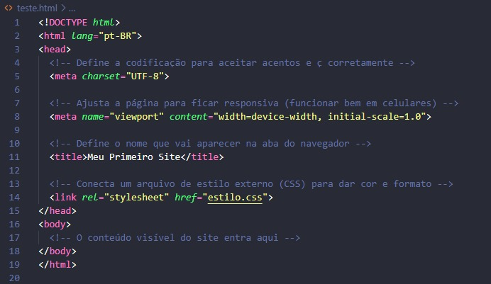
Código head
A tag <head> em si não possui atributos obrigatórios ou muito comuns, pois ela funciona apenas como um "organizador" ou caixa para outras tags de configuração. Porém, as tags que moram dentro dela é que usam atributos importantes, como:
charset (na tag <meta>): Define o conjunto de caracteres (ex: UTF-8).
href (na tag <link>): Indica o caminho para arquivos externos, como folhas de estilo ou ícones.
name e content (na tag <meta>): Usados juntos para definir informações de SEO (como descrição da página) ou configurações de visualização em celulares.
<link>
Pense na tag <link> como um serviço de entrega ou encomenda que você contrata para a sua casa. A sua casa (o arquivo HTML) é o principal, mas você precisa buscar coisas de fora para equipá-la — como assinar uma revista de decoração (o arquivo CSS) ou encomendar um tapete novo. A tag <link> é o entregador que busca esses recursos externos e diz exatamente onde eles devem ser aplicados.
A tag <link> é usada para conectar recursos externos a um documento HTML. Ela é colocada obrigatoriamente dentro da tag <head>. A utilidade mais comum dela é carregar folhas de estilo (arquivos CSS) para colorir e organizar o visual da página, mas ela também serve para adicionar ícones na aba do navegador (favicon) e outras conexões úteis.
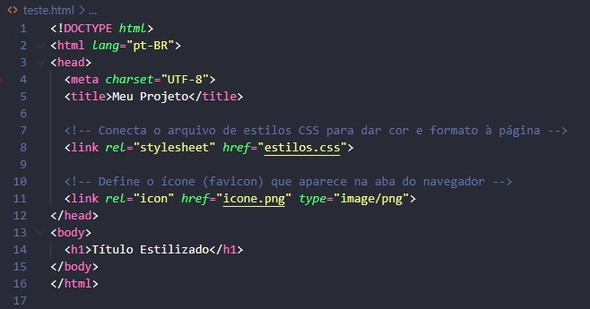
Código link
rel: Indica a relação entre o arquivo HTML atual e o arquivo externo que está sendo puxado (por exemplo, stylesheet para folhas de estilo ou icon para o ícone da aba).
href: Indica o caminho ou endereço (URL) do arquivo externo que você deseja carregar.
type: Descreve o tipo MIME do arquivo vinculado (como text/css), ajudando o navegador a entender o formato do que está sendo importado.
media: Especifica em quais tipos de tela ou dispositivos aquele recurso deve ser aplicado (muito usado para criar designs responsivos para celulares, impressoras, etc.).
<meta>
Pense na tag <meta> como a etiqueta de identificação afixada na lombada de um livro ou a ficha técnica na parte de trás de um eletrodoméstico. O leitor ou comprador não vai ler a etiqueta como se fosse a história do livro, mas é nela que estão descritas informações vitais: o idioma, o autor, a voltagem, se é bivolt e como ele deve funcionar.
A tag <meta> serve para fornecer metadados sobre o documento HTML — ou seja, informações sobre a página, que não aparecem visíveis na tela para o usuário. Ela é colocada obrigatoriamente dentro da tag <head>. É através dela que informamos ao navegador como ele deve exibir os caracteres (evitando que os acentos fiquem corrompidos), como o site deve se comportar em celulares (responsividade) e como os mecanismos de busca (como o Google) devem indexar a página.
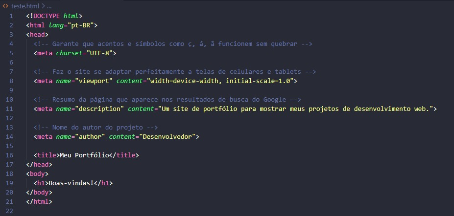
Código meta
Como a tag <meta> é bem versátil, ela usa diferentes combinações de atributos dependendo do que você quer configurar:
charset: Especifica a codificação de caracteres do documento (o mais comum e recomendado é UTF-8).
name: Define o nome da propriedade de metadado que você está configurando (por exemplo, viewport, description, author, ou robots).
content: Especifica o valor correspondente ao atributo name (por exemplo, o texto da descrição ou as regras de escala para celulares).
http-equiv: Permite definir instruções especiais que simulam comandos de cabeçalho de servidor HTTP (como atualizar a página automaticamente a cada X segundos).
<style>
Pense na tag <style> como um estojo de tintas e pincéis dentro do próprio cômodo. Em vez de ir buscar as tintas em um depósito externo (como fazemos ao usar o <link> para carregar um arquivo CSS separado), você já deixa as regras de pintura e decoração guardadas ali mesmo, no mesmo ambiente.
Ela permite que você escreva código CSS direto dentro do arquivo HTML. Tudo o que for colocado entre <style> e </style> será interpretado pelo navegador como regras de design — como cores de fundo, tamanhos de fonte, espaçamentos e alinhamentos. Embora possa ser usada em qualquer lugar, o ideal é que fique sempre dentro do <head>.
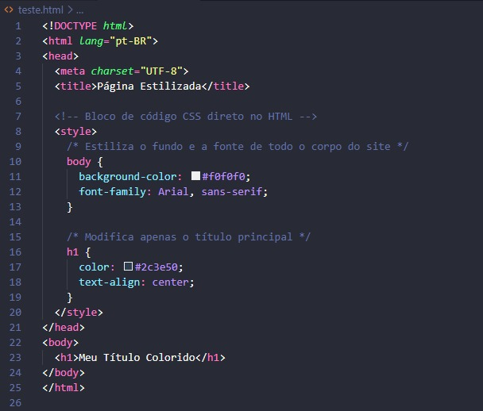
media: Define em quais dispositivos ou situações aquele estilo específico deve ser aplicado (ex: media="print" aplica as cores e formatações apenas quando o usuário vai imprimir a página, e media="screen" aplica na tela).
type: Antigamente era usado para indicar a linguagem de estilo, como type="text/css". No HTML5 moderno ele se tornou opcional, pois o navegador já entende por padrão que o conteúdo é CSS.
<title>
Pense na tag <title> como a placa na porta de uma loja ou o título impresso na lombada de um livro. Mesmo quando o livro está fechado na estante ou a loja está no meio de uma avenida movimentada, é por esse nome que você identifica rapidamente o que está ali antes mesmo de entrar.
Ela define o texto principal que identifica a página. Esse texto não aparece no corpo do site em si, mas é exibido em três lugares fundamentais: na aba do navegador, nos resultados de pesquisa do Google (como a linha azul clicável) e como nome padrão ao salvar a página nos favoritos. Ela deve ser colocada obrigatoriamente dentro do <head>.
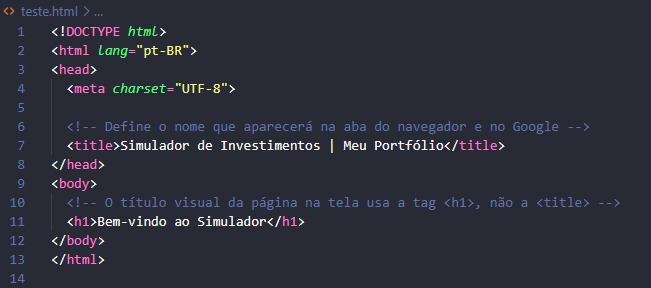
A tag <title> não utiliza atributos específicos no uso do dia a dia. Ela foi projetada para conter apenas texto simples e puro entre sua abertura <title> e seu fechamento </title>. Não é comum ou necessário colocar classes, IDs ou outros atributos nela.
<body>
Pense na tag <body> como o espaço físico de um salão de festas ou o showroom de uma loja. Enquanto o <head> guarda os bastidores, a fiação elétrica e as salas administrativas nos fundos, o <body> é a área onde os convidados entram, olham ao redor e interagem com os móveis, quadros, luzes e decorações.
Ela define todo o conteúdo visível da página web. Absolutamente tudo o que o usuário enxerga e clica no navegador — como textos, títulos, imagens, botões, formulários, vídeos e links — precisa estar obrigatoriamente dentro das chaves <body> e </body>. Só existe um <body> por documento HTML.
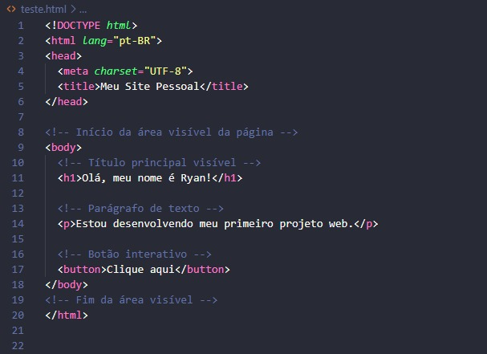
No HTML moderno, a maior parte dos estilos do <body> é feita via CSS, mas ele aceita os atributos globais e alguns eventos úteis:
onload: Executa um código (geralmente JavaScript) assim que a página termina de carregar completamente na tela.
onunload / onbeforeunload: Executa uma ação quando o usuário está prestes a fechar ou sair da página (como exibir um aviso de "Deseja salvar as alterações?").
class / id: Permite aplicar estilos CSS específicos ou manipulações via script em todo o corpo do site (muito usado para ativar um "modo escuro/dark mode" mudando a classe do <body>).
<address>
Pense na tag <address> como a assinatura no final de uma carta comercial ou o bloco de contato impresso no rodapé de um panfleto. Ela avisa a quem está lendo: "Estes dados aqui pertencem à pessoa ou empresa responsável por este documento".
Ela indica ao navegador e aos motores de busca (como o Google) que o texto ali dentro é a informação de contato do autor do documento ou de um artigo específico. Por padrão, os navegadores exibem o texto dentro de <address> em itálico, mas seu principal papel é dar sentido semântico ao conteúdo (ajudando no SEO e na acessibilidade).
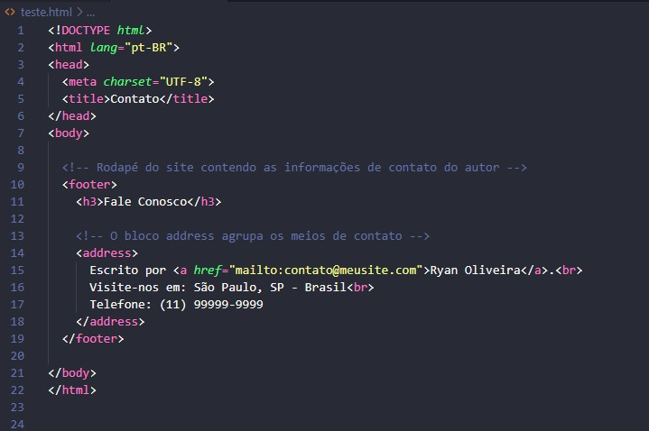
A tag <address> não possui atributos específicos exclusivos. Ela aceita todos os atributos globais do HTML, como:
class: Usado para aplicar classes de estilização com CSS (para mudar a cor, fonte ou tirar o itálico padrão).
id: Define um identificador único para o bloco de contato caso você queira manipulá-lo via JavaScript ou criar um link direto para ele.
<article>
Pense na tag <article> como uma matéria de jornal ou um post impresso em uma revista. Se você recortar essa página da revista com uma tesoura e colá-la em um mural, ela ainda vai fazer sentido por si só, porque tem seu próprio título, texto, autor e contexto.
Ela indica ao navegador, a leitores de tela e ao Google que aquele bloco de código é um conteúdo autônomo e independente. Isso significa que a informação ali dentro poderia ser reutilizada, compartilhada ou publicada em outro lugar (como um feed de notícias) sem perder o sentido. É perfeita para artigos de blog, posts de fórum, produtos de uma loja virtual ou comentários de usuários.
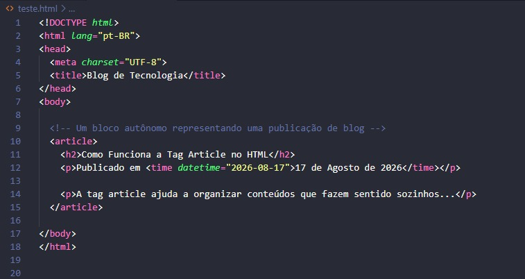
A tag <article> não possui atributos específicos e exclusivos. Ela utiliza os atributos globais do HTML, sendo os principais:
class: Usada para estilizar o bloco do artigo com CSS (definindo bordas, espaçamento interno, sombras e fundo).
id: Identificador único, muito útil para criar links diretos que levam até um artigo específico na página.
itemscope / itemtype: Atributos de dados estruturados (Microdata) usados para informar ao Google detalhes do artigo (como quem escreveu ou a data) para aparecer melhor nos resultados de busca.
<aside>
Pense na tag <aside> como uma caixa de texto "Saiba Mais" na margem de uma revista ou como o painel de avisos na entrada de uma recepção. O artigo principal do jornal está no meio da folha, mas na lateral há uma caixinha com uma curiosidade, um link relacionado ou uma propaganda rápida.
Ela guarda conteúdos que estão indiretamete relacionados ao assunto principal da página, mas que não fazem parte do fluxo direto do texto. É usada para criar barras laterais (sidebars), blocos de publicidade, links para posts populares, cotações de moedas, caixas de autor ou widgets de redes sociais.
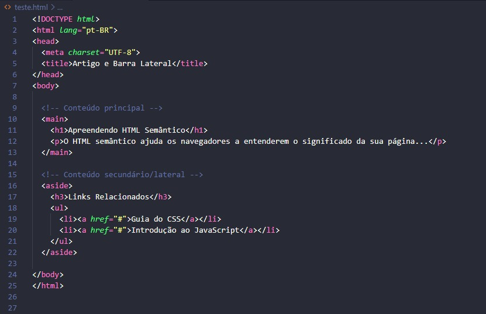
A tag <aside> não possui atributos específicos e exclusivos. Ela aceita os atributos globais do HTML:
class: Essencial para definir o visual da barra lateral no CSS (como fixá-la na lateral direita, mudar a cor de fundo ou ajustar a largura).
id: Identificador único para a barra lateral, útil se você quiser ocultá-la ou exibi-la via JavaScript (como em menus retráteis).
role: Usado para acessibilidade (ex: role="complementary"), avisando aos leitores de tela que aquele bloco é um conteúdo complementar.
<footer>
Pense no <footer> como o rodapé de um contrato, a última capa de um livro ou a placa de informação no chão do andar de um prédio. É onde ficam as assinaturas, direitos autorais, avisos legais e as direções finais para onde ir a seguir.
Ela define a área de encerramento do documento inteiro ou de um bloco interno (como um <article>). É o lugar padrão para colocar dados de direitos autorais (copyright), links para termos de uso, políticas de privacidade, redes sociais, mapa do site ou dados do autor.
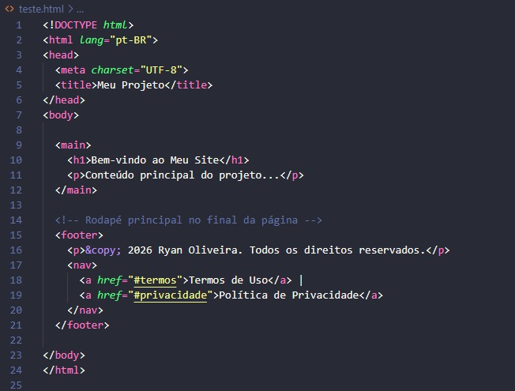
A tag <footer> não tem atributos específicos exclusivos. Ela utiliza os atributos globais do HTML:
class: Usada para aplicar estilos CSS no rodapé (como colocar fundo escuro, fixar no final da tela ou organizar os links em colunas).
id: Permite identificar aquele rodapé específico caso haja mais de um na mesma página ou para criar um link de "Ir para o rodapé".
role: Pode usar role="contentinfo" para reforçar para leitores de tela que aquele bloco contém informações sobre o documento.
<header>
Pense no <header> como o topo da primeira página de um jornal impresso ou a recepção de um hotel. É onde você encontra logo de cara a marca da empresa, o título da edição, os botões de navegação e as informações principais que mostram onde você está.
Ela agrupa o conteúdo introdutório da página ou de um bloco específico (como um artigo). É a área padrão para colocar o logotipo do site, o menu de navegação principal, o título do projeto e campos de busca. Ela ajuda leitores de tela e motores de busca a identificarem rapidamente onde começa o topo e a navegação da sua aplicação.
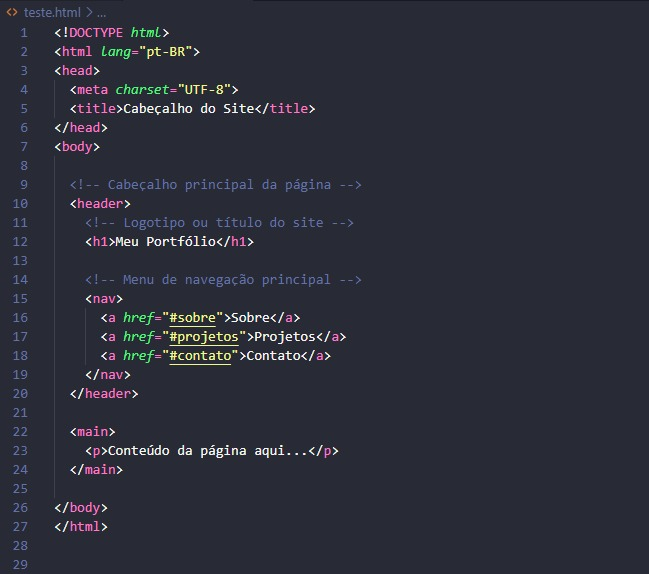
A tag <header> não possui atributos específicos exclusivos. Ela utiliza os atributos globais do HTML:
class: Usada para aplicar formatações CSS (como fixar o menu no topo da tela enquanto o usuário rola a página, aplicar fundo transparente ou alterar cores).
id: Identificador único para a seção do cabeçalho, muito utilizado para referenciá-lo em scripts de manipulação dinâmica.
role: Pode receber role="banner" (quando usada como o cabeçalho principal da página) para reforçar sua função para tecnologias assistivas e leitores de tela.
<h1> ao <h6>
Pense nelas como a estrutura de tópicos de um livro:
<h1> é o Título do Livro (só existe um principal).
<h2> é o Capítulo (pode haver vários).
<h3> é a Seção (pode haver várias).
<h4> é a Subseção (pode haver várias).
<h5> é a Subsubseção (pode haver várias).
<h6> é a Subsubsubseção (pode haver várias).
Elas indicam ao navegador e ao Google a importância relativa do texto. O <h1> é o mais importante e o <h6> é o menos importante. Por padrão, os navegadores exibem o <h1> bem grande e o <h6> bem pequeno, mas o tamanho visual deve ser controlado pelo CSS, não pelas tags em si.
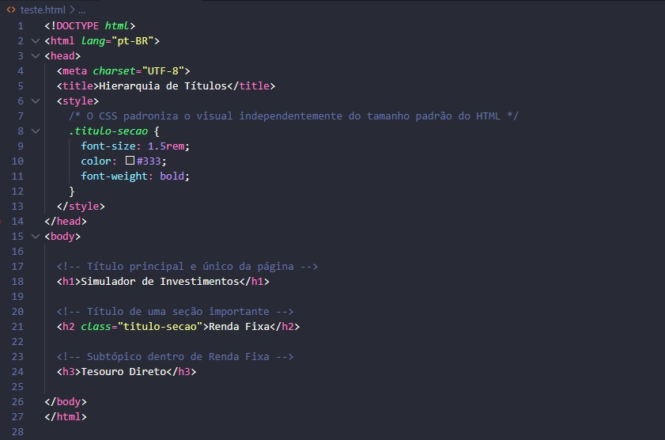
As tags
a
não possuem atributos específicos exclusivos, mas utilizam os globais:
class: Essencial para aplicar os estilos e padronizar o tamanho dos títulos com CSS.
id: Permite criar links internos na página (ex: <a href="#secao1"> leva direto ao <h2 id="secao1">).